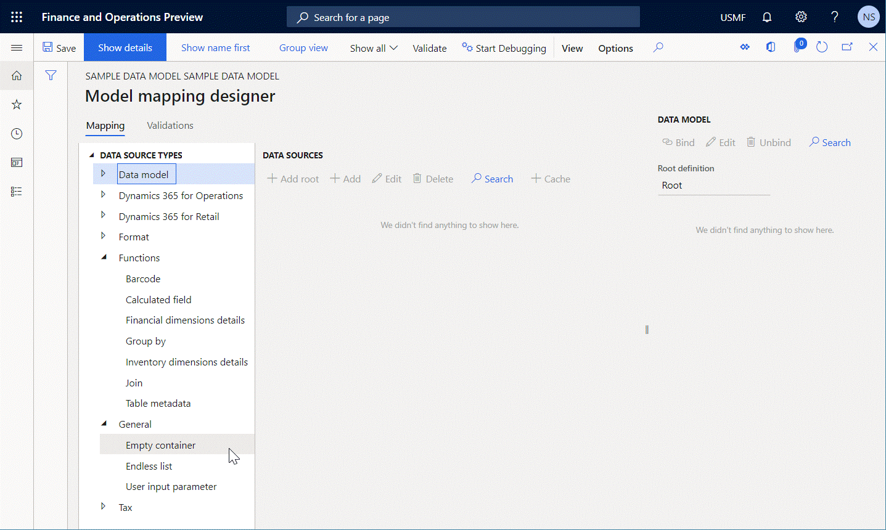
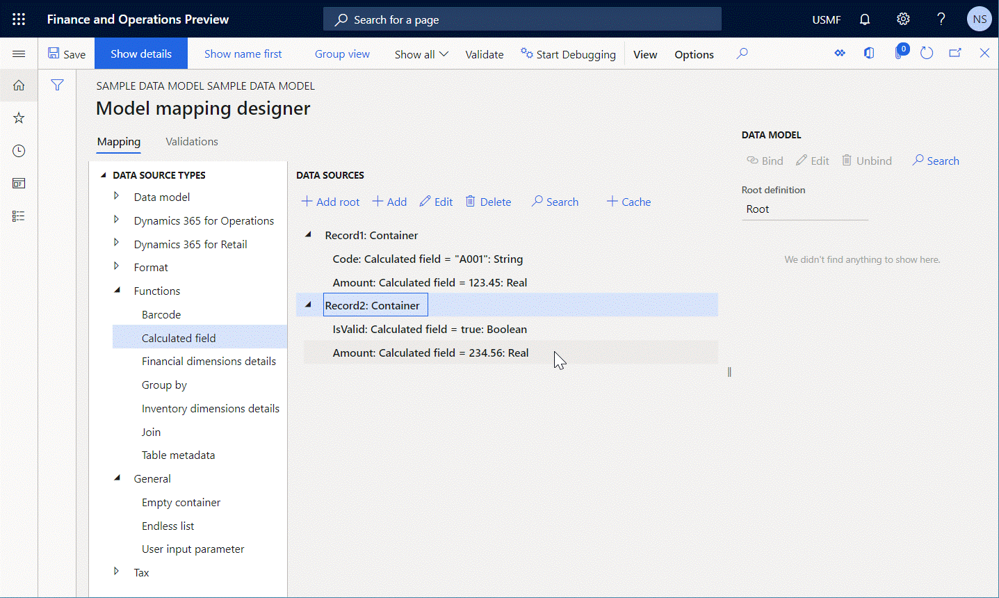
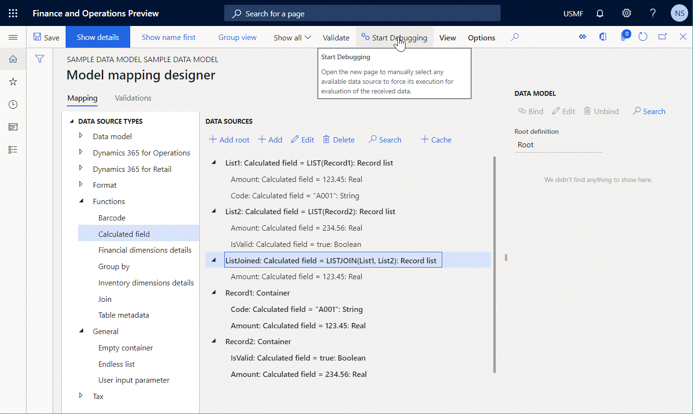

LISTJOIN EB-Funktion
[!include[banner](../includes/banner.md)]Die LISTJOIN Funktion gibt den Wert Datensatzliste zurück, der eine neue Liste von Datensätzen darstellt, die anhand der angegebenen Argumente erstellt wird.
Syntax
LIST (list 1 [, list 2, …, list N])
Argumente
list 1: Datensatzliste
Ein Verweis auf eine Datenquelle des Datensatztyps Datensatzliste. Dieses Argument ist obligatorisch.
list N: Datensatzliste
Ein Verweis auf eine Datenquelle des Datensatztyps Datensatzliste. Diese zusätzlichen Argumente sind optional.
Rückgabewerte
Datensatzliste
Die resultierende Liste der Datensätze.
Anwendungshinweise
Die Struktur der Liste, die erstellt wird, zeigt nur die Felder, die in der Struktur jedes Datensatzes dargestellt werden, der in den Argumenten erwähnt wird.
Beispiel
Sie geben die Datenquelle Record 1 des Typs Container ein. Diese Datenquelle enthält die folgenden verschachtelten Felder des Typs Calculated field Feld:
- Code: Dieses Feld enthält einen Ausdruck, der einen Wert vom Typ
Stringzurückgibt. - Betrag: Dieses Feld enthält einen Ausdruck, der einen Wert vom Typ
Realzurückgibt.
Sie geben dann die Datenquelle Record 2 des Typs Container ein. Diese Datenquelle enthält die folgenden verschachtelten Felder des Typs Calculated field Feld:
- Betrag: Dieses Feld enthält einen Ausdruck, der einen Wert vom Typ
Realzurückgibt. - IsValid: Dieses Feld enthält einen Ausdruck, der einen Wert vom Typ
Booleanzurückgibt.

In diesem Fall gibt der Ausdruck LISTJOIN(LIST('Record 1'), LIST('Record 2')) eine neue Liste zurück, die zwei Datensätze enthält.

Die Struktur dieser Liste besteht aus einem einzelnen Feld Betrag des Typs Real, da dieses Feld das einzige Feld ist, das in jedem Argument der aufgerufenen Funktion vorhanden ist.
